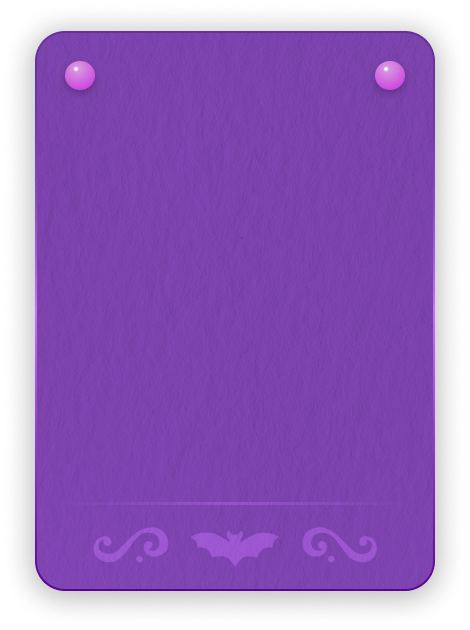

<!DOCTYPE html>
<html lang="en-US">

<head>
  <Title>Fernanda Fantin - Home</Title>
  <meta name="viewport" content="width=device-width, initial-scale=1.0">
  <link rel="stylesheet" href="css/style.css">
  <link rel="stylesheet" href="css/modal.css">
  <link rel="stylesheet" href="css/preloader.css">
  <link rel="preconnect" href="https://fonts.googleapis.com">
  <link rel="preconnect" href="https://fonts.gstatic.com" crossorigin>
  <link
    href="https://fonts.googleapis.com/css2?family=DM+Mono:ital,wght@0,300;0,400;0,500;1,300;1,400;1,500&family=New+Rocker&display=swap"
    rel="stylesheet">
  <link rel="icon" type="image/png" href="img/Fernanda/Logo.svg">
</head>

</html>

<body>

  <div class="preloader">
    
  </div>

  <div class="header" id="stickyHeader">
    <div class="link-wrapper">
      <div class="linkTextHighlight">Home</div>
      <a href="Interfaces.html" class="linkText">UI</a>
      <a href="Art.html" class="linkText">Art</a>
      <a href="About.html" class="linkText">About</a>
    </div>
  </div>

  <div id="particles-js"></div>

  <div class="bg-wrapper">
    <div class="textbox">
      <div class="dataRowTitle">
        <div class="title">Fernanda Fantin</div>
      </div>
      <div class="dataRowLarge">
        <div class="legendText">Currently in the UK, originally from Brazil.</div>
      </div>
      <br>
      <div class="description">
        Works in the Games industry as a <span class="accentText">UI Designer</span> since 2022.
        <br><br>
        Grew up in Brazil, and lived in Japan for a couple years before settling in the UK.
        <br><br>
        Loves <span class="accentText">cozy games</span> and <span class="accentText">MMORPG</span>, which is the
        reason
        they have a very long backlog and need to find the source of eternal life.
      </div>
    </div>
    
  </div>

  

  <div class="card-wrapper">
    <a href="Art.html" class="card">
      
      
    </a>
    <a href="Interfaces.html" class="card">
      
      
    </a>
    <a href="About.html" class="card">
      
      
    </a>
  </div>
  <br>
  <div class="textboxLarge">
    <div class="quote">
      "I love birds, and bats are equally avian in my heart." - Fernanda
    </div>
  </div>

  

  <div class="bg-wrapper">
    <div class="textbox">
      <div class="dataRowTitle">
        <div class="title">User Interface Designer</div>
      </div>
      <div class="dataRowLarge">
        <div class="legendText">UI Design, 2D Art and Implementation</div>
      </div>
      <br>
      <div class="description">
        They joined the games industry as an <span class="accentText">UI Artist</span>, and quickly learned that in
        order to improve their craft, they'd need to get equally competent in <span class="accentText">Graphic Design,
          Game Design and 2D Animation</span>. <br><br>
        So their endless pursuit for <span class="dimText"><s>power</s></span> knowledge began. Since then, not
        only they managed to improve on every aspect of the UI workflow, but also have been able collaborate with
        programmers to improve <span class="accentText">UI integration</span> on multiple projects.
      </div>
    </div>
    
  </div>

  <div class="bg-wrapper-reverse">
    <div class="textbox">
      <div class="dataRowTitle">
        <div class="title">Experience</div>
      </div>
      <div class="dataRowLarge">
        <div class="legendText">Currently: UI Artist at Coatsink</div>
      </div>
      <br>
      <div class="description">
        Fernanda is the sole <span class="accentText">UI Designer</span> at Coatsink. They are responsible for
        the <span class="accentText">UI kick-off</span> with Game Designers, <span class="accentText">Mockups</span>,
        <span class="accentText">Art Assets</span>, <span class="accentText">UI Animations</span> and initial
        <span class="accentText"> UI Structure Implementation</span>
        before passing the UI over to programmers. <br><br>
        They also do a couple rounds of polishes, tweaks and moral support (very important) during the whole process.
      </div>
    </div>
    
  </div>

  <div id="myModal" class="modal">
    
    <video class="modal-content-video" autoplay muted loop id="modalVideo">
  </div>

  <div class="scrollToTop" id="scrollToTop">
    
  </div>

  <div class="footer">2025 | Fernanda Fantin</div>

</body>
<script src="js/preloader.js"></script>
<script src="js/modal.js"></script>
<script src="js/scrollTrigger.js"></script>

<script src="particles.js/particles.js"></script>
<script src="particles.js/app.js"></script>

</html>